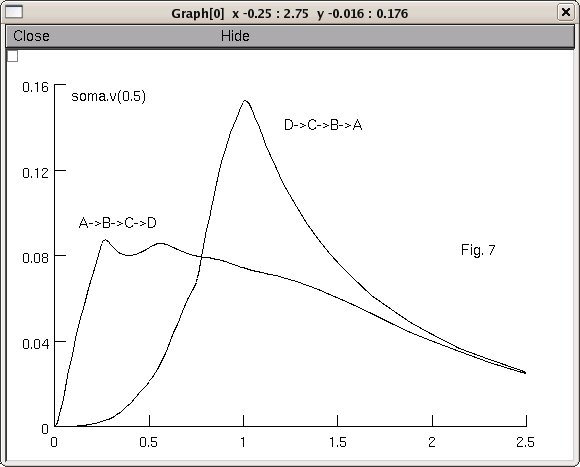

This is the readme for a model that reproduces figures 5 - 8 from
Rall, W.
Theoretical significance of dendritic trees for neuronal input-output
relations.
In: Neural Theory and Modeling, ed. Reiss, R.F., Palo Alto: Stanford
University Press (1964).
For a more recent print of the same article, see pages 122-146 of
The Theoretical Foundation of Dendritic Function,
ed. Segev, I., Rinzel, J, and Shepherd, G.M.,
Cambridge, MA: MIT Press (1995).
This implementation by Ted Carnevale, to whom questions should be addressed.
Usage:
1. Unzip rall1964.zip into an empty directory.
2. Compile the mod file with (linux/unix) nrnivmodl or (mswin/mac)
mknrndll.
3. (mswin) Double click on init.hoc, or (linux/unix) execute
nrngui init.hoc
from the command line or (mac) drag and drop init.hoc onto the
nrngui icon.
4. A panel will appear with labeled buttons that offer a selection of
figures, e.g.
"Fig. 7--effect of activation sequence"
Click on one of these to see NEURON reproduce the simulations
shown in that figure of the original article. The Fig 7 button
produces:
